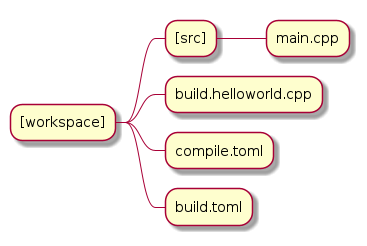

BuildExe as a Package Manager#
When we are compiling our “script” to an executable we can also add additional library build files which define how the library is built.
The procedure is similar to git cloning the library to the ENV{BUILDCC_HOME}/libs folder using the libs options in buildexe.
Please see BuildExe Setup to setup your libs folder appropriately.
Basic Procedure#
![usecase "build.user_project.cpp" as build_cpp
usecase "libs/library/build.library.h" as build_lib_header
usecase "libs/library/build.library.cpp" as build_lib_source
usecase "compile.toml" as compile_toml
usecase "host_toolchain.toml" as host_toolchain_toml
rectangle "./build.user_project" as build_project_exe
usecase "build.toml" as build_toml
rectangle "./buildexe" as buildexe_exe
artifact "library" as library
artifact "./hello_world" as hello_world_exe
build_cpp -right-> buildexe_exe
build_lib_header -right-> buildexe_exe
build_lib_source -right-> buildexe_exe
compile_toml -up-> buildexe_exe
host_toolchain_toml -up-> buildexe_exe
buildexe_exe -right-> build_project_exe
build_toml -up-> build_project_exe
build_project_exe -right-> hello_world_exe
library -up-> hello_world_exe](../_images/plantuml-5669be3cde8ac843833b78be715a0ce02d47688d.png)
Helloworld “fmtlib” example#
Git clone the
fmtlibrary into yourENV{BUILDCC_HOME}/libsfolder- Run
buildexe libs --help-all. You should automatically see the library folder name pop up under the
libssubmodule.In this case it will be the
fmtoption.
- Run
1script
2 Options:
3 --configs TEXT ... Config files for script mode
4
5libs
6 Libraries
7 Options:
8 --fmt TEXT ... fmt library
Since we want to use the
fmtlibrary in our project we can now write ourcompile.tomlfile as given below. (See highlighted lines)We then write our “script”, include the
fmtbuild header file and define our targets and dependencies.Lastly we invoke buildexe to build our project
buildexe --config compile.toml --config $BUILDCC_HOME/host/host_toolchain.toml
Directory structure#

Write your fmtlib build files#
Note
This process might seem like a hassle. But please note that fmtlib does not currently have support for BuildCC like build files and it must be provided by the user.
1#pragma once
2
3#include "buildcc.h"
4
5using namespace buildcc;
6
7/**
8* @brief User configurable options
9* default_flags: Adds default preprocessor, compile and link flags to the fmt
10* library if true. If false these would need to be provided by the user.
11*/
12struct FmtConfig {
13 bool default_flags{true};
14 // NOTE, Add more options here as required to customize your fmtlib build
15};
16
17/**
18* @brief Build the libfmt static or dynamic library
19*
20* @param target Initialized specialized library target
21* @param config See FmtConfig above
22*/
23void build_fmt_cb(BaseTarget& target, const FmtConfig& config = FmtConfig());
24
25/**
26* @brief Information for fmt header only library
27*
28* @param target_info Holds the include dirs, headers and preprocessor flag
29* information
30*/
31void build_fmt_ho_cb(TargetInfo& target_info);
1#include "build.fmt.h"
2
3void build_fmt_cb(BaseTarget& target, const FmtConfig& config) {
4 target.AddSource("src/os.cc");
5 target.AddSource("src/format.cc");
6 target.AddIncludeDir("include", false);
7 target.GlobHeaders("include/fmt");
8
9 // Toolchain specific flags added
10 // if default_flags == true
11 if (config.default_flags) {
12 switch (target.GetToolchain().GetId()) {
13 case ToolchainId::Gcc:
14 target.AddCppCompileFlag("-std=c++11");
15 break;
16 case ToolchainId::MinGW:
17 target.AddCppCompileFlag("-std=c++11");
18 break;
19 case ToolchainId::Msvc:
20 target.AddCppCompileFlag("/std:c++11");
21 break;
22 default:
23 break;
24 }
25 }
26
27 // Register your fmt lib tasks
28 target.Build();
29}
30
31void build_fmt_ho_cb(TargetInfo& target_info) {
32 target_info.AddIncludeDir("include", false);
33 target_info.GlobHeaders("include/fmt");
34 target_info.AddPreprocessorFlag("-DFMT_HEADER_ONLY=1");
35}
Write your C++ “script”#
Boilerplate is similar to the BuildExe helloworld “script” example in BuildExe “Script” example
Core build setup is highlighted below
On line 4 we include our
build.fmt.hinclude file. Seecompile.tomllibs submodule to correlate- On line 8 we include the
buildexe_lib_dirs.hinclude file. This is a generated include file which contains the absolute paths of the library folders. Access is through
BuildExeLibDir::[lib_folder_name]This is the reason why we need to make sure that our git cloned library folder name is also a valid C++ variable name.
- On line 8 we include the
- On line 40 we point to the absolute
fmtlibs folder path for the sources and redirect the output to ourenv::get_project_build_dir() / "fmt"folder. In this way we can safely use out of root projects and redirect the output files to our build location
There are other input source -> output object redirect options through additional APIs.
- On line 40 we point to the absolute
On line 43 and 44 we directly use our fmtlib build APIs to define how fmtlib should be built
- On line 47 and 48 we define our Hello World executable target
See
main.cppbelow for fmtlib hello world exampleSee
hello_world_build_cbfor build steps
- On line 79
hello_world_build_cbin additional to compiling ourmain.cppfile We need to link our compiled
fmt_libusing theAddLibDepAPIWe also insert the
fmt_libinclude dirs to the hello world target since we need to#include "fmt/format.h"inmain.cpp
- On line 79
- On line 52 we register a dependency of
fmt_libonhello_world. This guarantees that the fmt library will be built before the hello world executable.
This is essential because we need to link fmtlib with our hello world executable.
- On line 52 we register a dependency of
1#include "buildcc.h"
2
3// Included through libs
4#include "build.fmt.h"
5
6// Generated by BuildCC
7// See the `_build_internal` directory
8#include "buildexe_lib_dirs.h"
9
10using namespace buildcc;
11
12// Function Prototypes
13static void clean_cb();
14static void hello_world_build_cb(BaseTarget &target, BaseTarget &fmt_lib);
15
16int main(int argc, char **argv) {
17 // 1. Get arguments
18 Args args;
19 ArgToolchain arg_gcc;
20 args.AddToolchain("gcc", "Generic gcc toolchain", arg_gcc);
21 args.Parse(argc, argv);
22
23 // 2. Initialize your environment
24 Register reg(args);
25
26 // 3. Pre-build steps
27 reg.Clean(clean_cb);
28
29 // 4. Build steps
30 // Explicit toolchain - target pairs
31 Toolchain_gcc gcc;
32 auto verified_toolchains = gcc.Verify();
33 env::assert_fatal(!verified_toolchains.empty(), "GCC Toolchain not found");
34
35 // Setup your [Library]Target_[toolchain] fmtlib instance
36 // Update your TargetEnv to point to `BuildExeLibDir::fmt` folder
37 // The generated build files will go into your current `project_build_dir / fmt` folder
38 StaticTarget_gcc fmt_lib(
39 "libfmt", gcc,
40 TargetEnv(BuildExeLibDir::fmt, env::get_project_build_dir() / "fmt"));
41
42 // We use the build.fmt.h and build.fmt.cpp APIs to define how we build our fmtlib
43 FmtConfig fmt_config;
44 reg.Build(arg_gcc.state, build_fmt_cb, fmt_lib, fmt_config);
45
46 // Define our hello world executable
47 ExecutableTarget_gcc hello_world("hello_world", gcc, "");
48 reg.Build(arg_gcc.state, hello_world_build_cb, hello_world, fmt_lib);
49
50 // Fmt lib is a dependency to the Hello world executable
51 // This means that fmt lib is guaranteed to be built before the hello world executable
52 reg.Dep(hello_world, fmt_lib);
53
54 // 5. Test steps i.e Hello world is automatically run
55 reg.Test(arg_gcc.state, "{executable}", hello_world);
56
57 // 6. Build Target
58 // Builds libfmt.a and ./hello_world
59 reg.RunBuild();
60
61 // 7. Test Target
62 // Executes ./hello_world
63 // Output -> Hello World
64 reg.RunTest();
65
66 // 8. Post Build steps
67 // - Clang Compile Commands
68 plugin::ClangCompileCommands({&hello_world}).Generate();
69 // - Graphviz dump
70 std::cout << reg.GetTaskflow().dump() << std::endl;
71
72 return 0;
73}
74
75static void clean_cb() {
76 fs::remove_all(env::get_project_build_dir());
77}
78
79static void hello_world_build_cb(BaseTarget &target, BaseTarget &fmt_lib) {
80 target.AddSource("main.cpp", "src");
81
82 // Add fmt_lib as a library dependency
83 target.AddLibDep(fmt_lib);
84 // We need to insert the fmt lib include dirs and header files into our hello_world executable target (naturally)
85 target.Insert(fmt_lib, {
86 SyncOption::IncludeDirs,
87 SyncOption::HeaderFiles,
88 });
89
90 // Register your tasks
91 target.Build();
92}
Write your compile.toml file#
The only difference from the
compile.tomlin BuildExe “Script” example is the additional of thelibssubmoduleWe use the
fmtoption since we git cloned the library into the libs folderWe add the various fmt build files that need to be compiled with our “script”
See highlighed lines 19 and 20
1# Settings
2root_dir = ""
3build_dir = "_build_internal"
4loglevel = "debug"
5clean = false
6
7# BuildExe run mode
8mode = "script"
9
10# Target information
11name = "single"
12type = "executable"
13relative_to_root = ""
14srcs = ["build.main.cpp"]
15
16[script]
17configs = ["build.toml"]
18
19[libs]
20fmt = ["build.fmt.cpp", "build.fmt.h"]
Write your build.toml file#
Exact same
build.tomlas seen in the document BuildExe “Script” example
1# Root
2root_dir = ""
3build_dir = "_build"
4loglevel = "debug"
5clean = true
6
7# Toolchain
8[toolchain.gcc]
9build = true
10test = true
Write your main.cpp helloworld example in fmtlib#
#include "fmt/format.h"
int main() {
fmt::print("{} {}", "Hello", "World");
return 0;
}